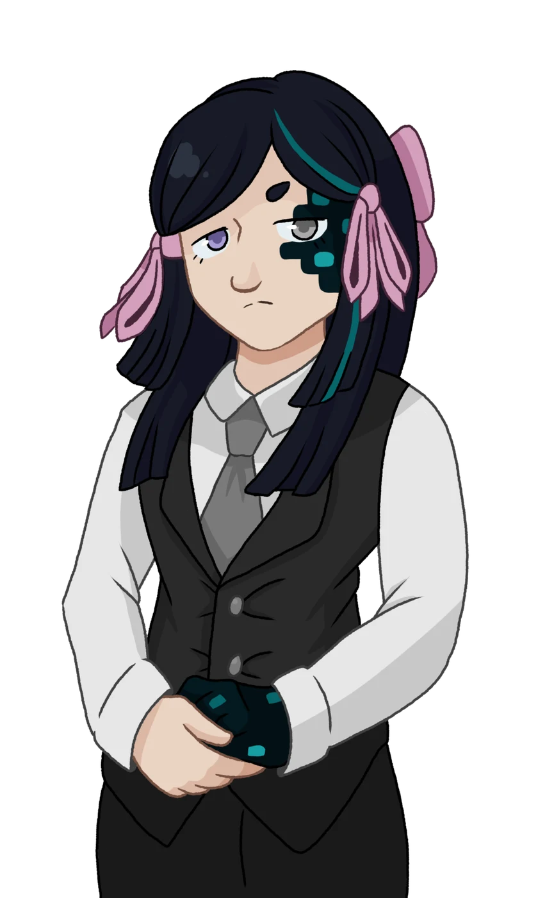
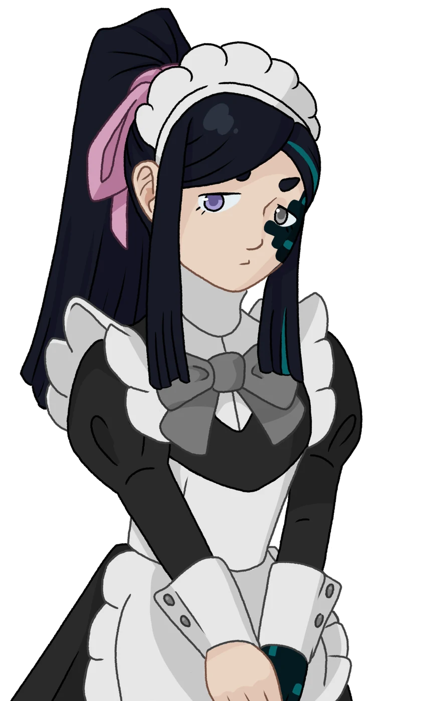

Alice
Informations Générales
Fidèle servante de l'illustre famille Blackraven, la seule qui soit restée jusqu'à la fin. Alice se considère comme un outil : ce n'est pas à elle de remettre les ordres en question. Elle fera tout ce qu'on lui demande, quelle qu'en soit la moralité.
Seule survivante de la rage d'un Warden, Alice semble aujourd'hui errer sans but. Peut-être porte-t-elle encore la mémoire des Blackraven, ainsi que la corruption des Abysses ?
Détails
Aime
- Les chiens
- Le silence
- Jardiner
N'aime pas
- Les bruits forts
- Être remarquée
- Les héros moralisateurs
Alice ressemble à une jeune femme droite et élégante, vêtue d'une tenue de majordome soigneusement entretenue. Celle-ci est composée d'une veste noire sur une chemise blanche, associé à un pantalon noir et des chaussures assorties. Une cravate grise complète l'ensemble. Ses cheveux noir ébène sont retenus par un noeud rose pâle, noué haut afin de ne pas gêner son travail.
Son visage est marqué par une expression neutre, impassible, morte. Son corps n'est plus entièrement humain. Sa main gauche est rongée par une couche de Sculk : une substance noir verdâtre, presque vivante, qui se fond dans sa peau. Elle s'étend de sa main jusqu'à son épaule, puis remonte le long de son cou pour couvrir le côté gauche de son visage, s'incrustant sous l'oeil. Sa pupille gauche est devenue gris-terne, l'autre étant resté bleu marine.
La substance presque fongique agit parfois comme un organisme vivant, pulsant lentement au rythme de son coeur. Elle émet une faible lueur dans l'obscurité, dont les motifs et paternes à la surfaces semblent changer et amplifient ses émotions.
Alice vit avec une douleur sourde constante et une vision altérée de l'oeil gauche. La corruption lui confère une vision nocturne, mais elle a du mal à percevoir les couleurs et les détails. Elle est également plus sensible à la lumière vive, et au son. Un coup de tonnerre ou une foule bruyante peuvent lui causer une sérieuse désorientation, voire de la douleur physique.
Depuis sa transformation, Alice n'a plus de besoins primaires. Manger, respirer, dormir lui sont devenus des actes mécaniques qu'elle performe pour conforter les autres, pour paraître "normale". La nuit, seuls les monstres les plus désespérés s'attaquent à elle. Les autres humment en sa direction, et se détournent par dégoût.
Alice peut sembler apathique et vide de l'extérieur. Son visage reste impassible en toutes circonstances, comme si elle s'ennuyait éternellement. Pourtant, elle ressent bel et bien des émotions intérieurement. Il n'est simplement pas son rôle de les exprimer.
Histoire
Née dans une famille de domestiques, Alice grandit plongée dans une vie de service auprès de la dynastie Blackraven, une noble famille philanthrope aussi puissante que respectée.
D'abord chargée de tâches simples, son efficacité fit d'elle une aide précieuse au sein de la maisonnée, appréciée aussi bien par le personnel que par la famille. Avec les années, le couple eu un fils, qui s'attacha très vite à Alice grâce à ses soins et leur faible différence d'âge. Peu à peu, ses parents en vinrent eux aussi à la considérer comme une membre de la famille, malgré ses origines modestes.
Les investissements de la famille prirent un tournant funeste lorsque des mineurs de la région découvrirent une étrange substance enfouie dans les profondeurs de la terre : un liquide sombre et charnel, capable de ressouder les os brisés et de guérir les maladies.
Ils l'appelèrent "Sculk".
Persuadée d'avoir trouvé une matière miraculeuse, la famille investit massivement dans la compagnie minière. Tout fut mis en œuvre pour exploiter pleinement la substance, et l'industrialiser.
Mais le remède devint poison.
Au fil des années, le Sculk rongea lentement les coeurs et corrompit les âmes. La famille ne fut bientôt plus que l'ombre de ce qu'elle avait été. Lui devint arrogant, paranoïaque. Elle devint avide, distante. Le couple autrefois bienveillant devint tyrannique et répandit misère, famine et maladie sur les terres alentours, dans une quête sans fin de richesses et de pouvoir.
Alice demeura à leur service, fidèle envers et contre tout. Elle ne posa pas questions lorsque l'enfant cessa soudainement de rire. Elle ne posa pas de questions lorsque le chien de la famille se mit à grogner face aux ombres. Elle ne posa pas de questions lorsque les miroirs furent bannis de la demeure.
Elle ne posa pas de questions lorsque le majordome en chef toussa du sang, puis fut retrouvé mort sur un tapis le lendemain, lui laissant son titre en l'absence de tout autre domestique.
Elle ne posa pas de questions lorsque le jardin se mit à pourrir au toucher de la Maîtresse de maison. Elle ne posa pas de questions lorsque la substance se glissa entre les murs anciens, avalant tableaux et tapisseries. Elle ne posa pas de questions lorsque les yeux du Maître devinrent noirs, suintant un liquide obscur. Elle ne posa pas de question lorsque son propre bras commença lentement à changer.
Elle resta. Jusqu'à la fin.
Celle-ci vint un soir d'orage, lorsque les mineurs révélèrent une cité enfouie, demeure d'une horreur ancienne. Une bête immense, aveugle et invincible. Plus grande qu'un Golem, une montagne d'un état d'existence indéfinissable. Un affront à la vie, à la mort, capable de broyer le béton dans le creux de ses mains, de réduire en poussière la moindre vibration. Un Warden.
La bête se déchaîna sur la ville, détruisant tout sur son passage. Les Blackraven furent parmi les premières victimes. Les murs anciens de l'ancienne dynastie s'effondrèrent. Alice fut la seule survivante, cachée sous les cendres de la demeure ancestrale.
A présent sans maître et sans but, elle erre aujourd'hui tel un fantôme à travers le monde, laissant derrière elle la désolation de ses terres natales.
Notes d'Alice
Caelan Blackraven
Patriarche de la famille Blackraven. Maître Caelan était un homme d'affaires aussi bienveillant qu'impitoyable. Il entra dans la famille en épousant Dame Ysolda, et par cette union, la fortune familiale passa entre ses mains. Il était déterminé à l'employer pour le bien de la communauté.
Il aimait les gens du peuple. Tous les Samedi étaient un prétexte pour visiter le marché d'un village local et s'entretenir avec populace.
Il me faisait confiance. Il me parlait de la maladie de Lysandre, de ses peurs pour l'avenir. De ce qu'il laisserait derrière lui. De l'héritage ancien dont il tenait à se montrer digne. De l'amour qu'il portait à sa famille.
Il m'y inclut, autrefois. Il me surnommait "Praline".
Sa générosité et son avarice furent sa perte.
Lysandre Blackraven
Héritier de la famille Blackraven. Lysandre était un jeune garçon gentil, plein de vie et d'une curiosité sans égards. Il était cependant fragile, étant né avec une maladie l'empêchant de quitter le domaine familial.
Il aimait jouer dans les jardins avec son chien, Iver. Il aimait les histoires effrayantes avant de dormir. Il aimait coiffer mes cheveux avec des rubans roses. Il aimait m'accompagner dans chaque tâche ménagère, peu importe à quel point elles pouvaient être ennuyeuses. Il aimait me regarder cuisiner, volant parfois des ingrédients pour les manger quand il pensait que je ne le voyais pas. Il avait peur du noir, et ne pouvait dormir sans lumière.
Sa couleur préférée était le bleu sarcelle. [Encre maculée]
Ysolda Blackraven
Matriarche de la famille Blackraven. Dame Ysolda aimait paraître comme douce, inoffensive. Elle était terriblement rusée, calculatrice, et bien plus redoutable en affaire que son mari. Elle hérita de la fortune familiale quand son grand-père décéda durant son enfance. Seule héritière, elle régna seule jusqu'à ce qu'elle rencontre Maître Caelan.
Dame Ysolda aimait organiser de grandes fêtes dansantes au manoir. Elle détestait comment les grands halls et couloirs vides l'étouffaient de solitude.
Elle aimait me montrer à son bras, lors de soirées mondaines. Elle aimait m'apprendre à danser, me tenir la jambe un verre de vin à la main pendant que je m'occupais du jardin. Elle me regardait parfois avec un air distant et triste. Elle me disait que j'étais jolie.
Elle tenait trop à moi. Elle fut la première à partir.
...Elle me manque.
"La Sorcière"
Une étrange femme que j'ai rencontrée dans les bois, après tout.
Elle m'a recueillie.
Elle m'a aidée.
Elle a veillé sur moi.
Elle est morte.
Les dieux n'ont jamais réussi à lui voler son sourire.
Illustrations

Artwork par Santithur

Artwork par Santithur